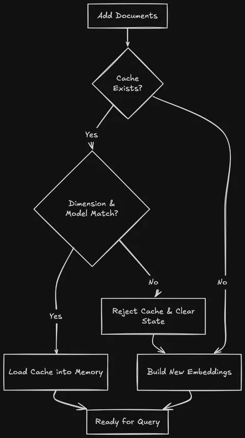
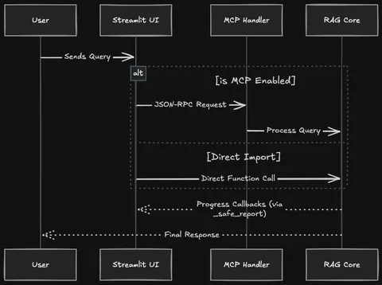
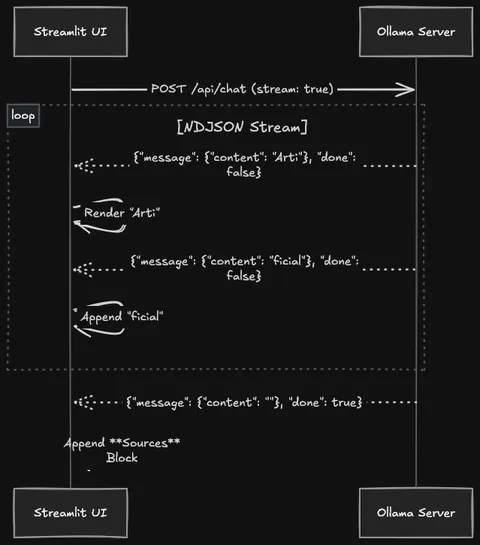
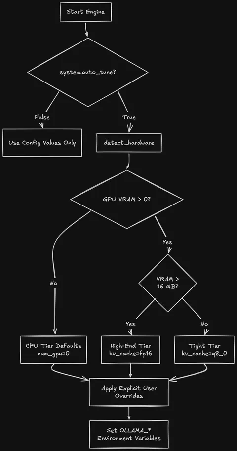

Discovering RAGs 4: Project updates all the way
By Sukalyan RoyPublished 7 min read

So far, we have covered a lot of the project. All the conceptual basics, going from the bare-bones structure of the project and right into features such as RRF.
Where do we go from here? Well, there's going to be atleast a couple posts like this, which are not about novel concepts, as much as they are about the details of implementation.
The devlogs and the learnings I've gotten in trying to work with this project and improve it. The ways i have used AI to assist me, and the things that I had to do because even the best AI are not upto the mark for everything yet.
The commits were done with one specific improvement in mind, and for the devlogs, it is quite useful to go commit by commit and understand exactly what was changed and why.
Expect a bunch of code snippets, and as always, you can refer to the github repo for the whole thing.
Cache hardening #
commit ID: a9d827a

Throughout this project so far i've tried to avoid the typical Sentence Transformers approach, rather going for proper embedding models like qwen3-embedding:0.6b
The essential problem is that, the embeddings generated depend on the model and the surrounding configuration of the system.
If we build the embeddings and other data and store it under one model, then try to run it with another model, everything will collapse quite spectacularly.
So this commit introduced a cache schema version in config.json to manage embedding cache compatibility. Whenever you want to track or change it, this is the place to check.
Refuses to load when the cache header reports a different embedding model or vector dimension from the currently configured model. On mismatch the in-memory state is left empty so the next add_documents call rebuilds against the configured model. Returns True when the cache was loaded, False when it was rejected or empty.
Hash comparisons were used to keep track of duplicate chunks after processing.
But the current storage method is Pickle, which isn't safe for untrusted data (arbitrary code execution on load). It's tied to Python version semantics, and you can't migrate the schema without writing custom code. For a single-user local app it's fine; for production you'd swap to a real vector DB (FAISS for local, or Qdrant/Weaviate/Milvus/pgvector for served).
My GPU is slow, so even a document set of a few pdfs, maybe 5-6 of them, still takes a long time, and without any progress tracking, I had no idea whether any work was actually going on, or something silently failed and got stuck in an infinite loop.
So I had to introduce progress tracking,
progress_callback: Optional (stage, current, total) callback invoked during dedup and per-batch embedding. current and total are chunk counts; stage is one of "dedup", "embedding", "storing".This was essential because I faced this problem a lot.
And the self_report function was doing all the heavy lifting:
def _safe_report(callback: Optional[ProgressCallback], stage: str, current: Optional[int] = None, total: Optional[int] = None) -> None:
"""Invoke a progress callback while swallowing UI-side exceptions."""
if callback is None:
return
try:
callback(stage, current, total)
except Exception:
logger.debug("Progress callback raised; ignoring", exc_info=True)In essence, this commit was more about robustness and stability rather than fundamentally changing the functionality of anything.
MCP and Streamlit improvements #
commit ID: 303ff5df02a132e454976e2747ef0f1c9d0853ee

How to orchestrate the messages properly both with and without MCP servers? How to use the callbacks added previously and cleanly tie it up with the actual UI?
Adding genuine unit tests to the current state of the project so far, and more.
There was a split between the JSON structure of Notifications vs the structure of responses. And instead of trying to unify the whole thing, I simply added some demux logic at the JSON-RPC parsing level.
The whole callback and notification system was designed to be opt-in.
If someone wants to run the system without them, it should also support that, and that support was formalized here.
The groundwork for the Streaming responses was also set up here, which we will be discussing in detail next.
Streaming Responses #
commit ID: 542742b2cfa626d7a2872adae881b97ab13c515a

prereq is the generation path in llm_interface. Independent of the retrieval phases.
This one finally adds the optional streaming responses feature.
The difference is that, without streaming you have to wait for the full response to be generated. Whether it is going in the right direction or not, you must wait.
But with streaming, the data is sent chunk by chunk as it is generated by the LLM and you can easily figure out whether it's doing well or has completely lost the plot. You can either short circuit the generation as needed or prepare your next prompt in response to the faulty generation happening.
It streams Ollama responses (NDJSON token deltas) when generate_response(stream=True) is requested or system.enable_streaming is on; non-Ollama providers fall back to a single-chunk pseudo-stream.
The Newline Delimited feature of NDJSON is fundamental to the clean streamability of the chunks.
Set system.enable_streaming: true in config/config.json to render Ollama answers token-by-token.
-
Direct UI (
streamlit_app.py) : tick the "Streaming" checkbox on the chat page.FinalRAGChatbot.chat(stream=True)returns an iterator of text deltas which the UI hands tost.write_stream. The**Sources**block is appended as the final delta after the model finishes. -
MCP UI (
streamlit_app_mcp.py): whensystem.enable_streamingis on and the "Use MCP Protocol" toggle is off, the UI streams from the in-process engine viaMCPIntegratedRAG.chat_stream. With MCP on, streaming over JSON-RPC notifications is deferred (Phase 13 in the roadmap), so the UI renders the full answer once the MCPchattool returns.
The chat function returns:
Response string when stream is False. When True, an iterator of text deltas suitable for st.write_stream;
the source block is appended as the final delta and conversation history is recorded after the stream is fully consumed.
<think> blocks are buffered and stripped from what reaches the consumer.
At this point, streaming was still not functional for MCP, so with MCP on, it collapsed every streaming request and worked with a single complete string response after the LLM generation was complete.
Ollama Autotuning #
commit ID: 5ad96da06975fb1c8f68142fb273ad1f25e3df4b

The parameters I use in my device is specifically for the Bottlenecks that I have. If i shipped the project with those exact parameters, it would be unusable in a weaker device, and completely underutilise a stronger one.
Even if I don't go so far as to assume a technically illiterate user, I can't always expect them to be well versed in LLM hardware requirements or config best practices.
Then how to make sure that the config is done right?
This Commit aimed to fix this issue by setting up some heuristical assumptions about performance across different levels of hardware and then setup suggested config for each of them. So when someone runs the project for the first time, the tuning is already done at a level better than blind guessing.
If further change needed, the user can try to tweak it more.
To pin a specific value, replace "auto" with the value you want, explicit config always wins over auto-detection. To disable detection entirely, set system.auto_tune: false.
User-set values in config always win auto-detection only fills gaps marked "auto" or left out entirely.
OLLAMA_* env vars only affect the ollama serve process, which is started by you. The engine exports them into its own process for inheritance, but for the Ollama server to honour them, set them in the shell that runs ollama serve:
export OLLAMA_NUM_GPU=999 OLLAMA_KV_CACHE_TYPE=q8_0 OLLAMA_KEEP_ALIVE=24h
ollama servekeep_alive is the most impactful for interactive use: cold-loading a 4B model on a 4 GB card takes seconds; keeping it resident for 24 hours amortizes that across the session.
Also an important note: Just because i'm focusing on Ollama here, doesn't mean that nothing else works. I was a regular User of LM studio before this, and I'm aware that different APIs exist.
That's where the LLM interface comes in, you can change any part of that to make sure that your required LLM API works with it, and the rest of the whole project works perfectly without any changes beyond that.
Next up #
In the current implementation, retrieve_documents oversamples.
It gathers max_results * retrieval.rerank_oversample_factor candidates (default factor 4) from the retrieval stage (RRF-fused hybrid by default , or threshold-gated cosine in the dense-only fallback), then calls EmbeddingManager.rerank_results to reorder them and trims to max_results.
The current reranker is a lightweight placeholder (content-length bonus capped at +0.1, plus a per-type bias pdf=0.05, text=0.03, web=0.02);
the production upgrade is to swap that body for a real cross-encoder (e.g. ms- marco-MiniLM-L-6-v2) without changing the surrounding flow.
Conclusion #
The math behind the embeddings and the LLM generation is the cool looking part, but 80% of the actual engineering is just making sure the UI doesn't freeze, the cache doesn't corrupt when you swap models, and the hardware doesn't melt down because you assumed everyone has a 24GB GPU.
If you have a wildly different hardware setup, maybe a Mac with Apple Silicon or an older AMD card: pull the repo, let the auto-tuner run, and open an issue if the heuristical guesses fall flat.
I'm actively trying to map out those edge cases.